종자기사 (2019-03-03 기출문제)
1과목: 종자생산학
1. 종피휴면을 하는 식물에서 억제물질의 존재부위가 배유에 해당하는 것은?
- 상추
- 벼
- 보리
- 도꼬마리
(정답률: 51%)

2. 유한화서이면서, 작살나무처럼 2차지경 위에 꽃이 피는 것을 무엇이라 하는가?
- 두상화서
- 유이화서
- 원추화서
- 복집산화서
(정답률: 62%)
3. 채소작물 종자검사 시 검사규격에 대한 내용이다. ( )에 알맞은 내용은?
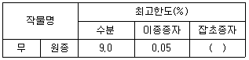
- 0.⑤
- 0.15
- 0.2
- 0.25
(정답률: 74%)
4. 종자의 수분상태에 따른 안전건조온도의 범위에 대한 내용이다. ( )에 가장 알맞은 내용은?
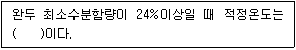
- 약 10℃
- 약 18℃
- 약 38℃
- 약 60℃
(정답률: 53%)
5. 다음에서 설명하는 것은?
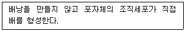
- 무포자생식
- 부정배생식
- 복상포자생식
- 웅성단위생식
(정답률: 73%)
6. 종자의 형태에서 형상이 능각형에 해당하는 것으로만 나열된 것은?
- 보리, 작약
- 메밀, 삼
- 모시풀, 참나무
- 배추, 양귀비
(정답률: 70%)
7. 다음 중 채소류 영양번식의 특징에 대한 설명으로 가장 적절하지 않은 것은?
- 번식의 용이성
- 종자와 같은 장기저장 곤란
- 영양체를 통한 바이러스 감염 방지
- 저장 및 운반의 비용의 과다
(정답률: 62%)
8. 성숙한 자방이 꽃이 아닌 다른 식물부위나 변형된 포엽에 붙어있는 것을 무엇이라 하는가?
- 복과
- 취과
- 위과
- 장과
(정답률: 73%)
9. 채소작물의 포장검사 시 시금치의 포장격리 거리는?
- 100m
- 300m
- 700m
- 1000m
(정답률: 71%)
10. 다음 중 ( 가 ), ( 나 )에 가장 알맞은 내용은?
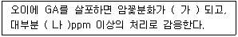
- 가 : 증가, 나 : 10
- 가 : 증가. 나 : 30
- 가 : 억제, 나 : 2
- 가 : 억제, 나 : 50
(정답률: 59%)
11. 다음에서 설명하는 것은?
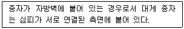
- 측막태좌
- 중축태좌
- 중앙태좌
- 이형태좌
(정답률: 83%)
12. 다음 중 암발아성 종자에 해당하는 것으로만 나열된 것은?
- 양파, 오이
- 베고니아, 갓
- 명아주, 담배
- 차조기, 우엉
(정답률: 62%)
13. 다음 중 안전저장을 위한 종자의 최대 수분함량의 한계가 가장 높은 것은?
- 고추
- 양배추
- 시금치
- 겨자
(정답률: 46%)
14. 다음 ( )에 공통으로 들어갈 내용은?
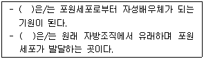
- 주피
- 주심
- 주공
- 에피스테이스
(정답률: 83%)
15. 교배에 앞서 제웅이 필요 없는 작물로만 나열된 것은?
- 벼,보리
- 토마토, 가지
- 오이, 호박
- 귀리, 멜론
(정답률: 62%)
16. ( )에 알맞은 내용은?
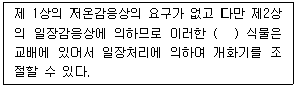
- 녹식물춘화형
- 무춘화형
- 종자춘화형
- 제춘화형
(정답률: 64%)
17. 식물학상 과실을 이용하며, 과실이 영에 싸여 있는 것으로만 나열된 것은?
- 겉보리, 귀리
- 밀, 시금치
- 옥수수, 당근
- 상추, 목화
(정답률: 89%)
18. 후숙에 의한 휴면타파 시 휴면상태가 종피휴면이고, 후숙처리방법이 고온에 해당하는 것은?
- 야생귀리
- 상추
- 자작나무
- 벼
(정답률: 54%)
19. 다음에서 설명하는 것은?
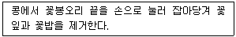
- 클립핑법
- 전영법
- 절영법
- 화판인발법
(정답률: 79%)
20. 다음 중 장명종자에 해당하는 것으로만 나열된 것은?
- 스토크, 백일홍
- 베고니아, 기장
- 팬지, 스타티스
- 양파, 일일초
(정답률: 64%)
2과목: 식물육종학
21. 재배식물에 발생하는 병에 대한 저항성으로 의미가 비슷한 것으로만 나열된 것은?
- 질적저항성, 포장저항성, 수직저항성
- 양적저항성, 비특이적저항성, 수평저항성
- 질적저항성, 비특이적저항성, 수직저항성
- 양적저항성, 진정저항성, 수평저항성
(정답률: 67%)
22. 다음 중 계통분리법과 가장 관계가 없는 것은?
- 자식성작물의 집단선발에 가장 많이 사용되는 방법이다.
- 주로 타가수분 작물에 쓰여지는 방법이다.
- 개체 또는 계통의 집단을 대상으로 선발을 거듭하는 방법이다.
- 1수1렬법과 같이 옥수수의 계통분리에 사용된다.
(정답률: 56%)
23. 다음 중 잡종(hetero)의 자가 수정작물을 계속해서 재배하면 어떻게 되는가?
- 동형접합성이 증가한다.
- 이형접합성이 증가한다.
- 아무변화도 없다.
- 환경에 따라 호모나 헤테로 어느 하나가 증가한다.
(정답률: 79%)
24. ( )에 가장 알맞은 내용은?
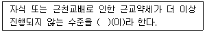
- 선발
- 초우성
- 잡종강세
- 자식극한
(정답률: 78%)
25. 다음 중 두 개의 다른 품종을 인공교배하기 위해 가장 우선적으로 고려해야 할 사항은?
- 개화시기
- 수량성
- 종자탈립성
- 도복저항성
(정답률: 85%)
26. 다음 중 우성상위 F2의 분리비로 가장 옳은 것은?
- 12:3:1
- 9:6:1
- 15:1
- 9:3:4
(정답률: 56%)
27. 다음 중 인위적으로 유전변이를 작성하는 내용과 가장 관계가 없는 것은?
- 종이 다른 야생종 벼와 재배종 벼 간 교배를 한다.
- 감자와 토마토의 체세포 원형질을 융합시킨다.
- 생장점배양에 의한 딸기의 무병주 증식을 한다.
- 박테리아에서 분리한 특정 유전자를 배추에 형질전환 한다.
(정답률: 77%)
28. 고등식물 유전자의 구조 중에서 단백질을 합성하는 유전정보를 가지고 있는 부위는?
- 프로모터
- 리보솜
- 인트론
- 엑손
(정답률: 64%)
29. 여교배 세대에 따른 반복친과 1회친의 비율에서 BC1F1일 때 반복친의 비율은?
- 50%
- 75%
- 87.5%
- 93.75%
(정답률: 72%)
30. 무배유종자를 가진 것으로만 나열된 것은?
- 벼, 밀
- 벼, 콩
- 보리, 팥
- 콩, 팥
(정답률: 86%)
31. 다음 중 분리육종방법에서 순계분리에 대한 설명으로 가장 옳은 것은?
- 품종화하기 이전에 지역적응시험이 필요치 않다.
- 다수의 선발개체로부터 채취한 종자를 혼합하여 세대를 진전한다.
- 순계분리는 자식성 식물에 주로 적용되지만 타식성 식물의 자식계통 육성에도 이용된다.
- 재래종을 공시화하여 선발계통의 우수성을 입증한다.
(정답률: 77%)
32. 피자식물에서 볼 수 있는 중복수정의 기구는?
- 난핵 × 정핵, 극핵 × 생식핵
- 난핵 × 생식핵, 극핵 × 영양핵
- 난핵 × 정핵, 극핵 × 정핵
- 난핵 × 정핵, 극핵 × 영양핵
(정답률: 84%)
33. 다음 중 폴리진에 대한 설명으로 가장 옳지 않은 것은?
- 양적 형질 유전에 관여한다.
- 각각의 유전자가 주동적으로 작용한다.
- 환경의 영향에 민감하게 반응한다.
- 누적적 효과로 형질이 발현된다.
(정답률: 66%)
34. 다음 ( )에 공통으로 들어갈 내용은?
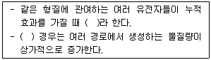
- 우성상위
- 보족유전자
- 복수유전자
- 열성상위
(정답률: 77%)
35. 1대 잡종을 품종으로 취급하는 이유로 옳지 않은 것은?
- 모든 개체가 동일한 유전자형이다.
- 광지역적응이고 채종량이 많으며, 각기 다른 표현형을 나타낸다.
- 인공교배로 똑같은 유전자형을 재생산 할 수 있다.
- 형질이 우수하고 균일하다.
(정답률: 64%)
36. 감귤, 바나나와 같이 종자가 생성되지 않고 과일이 생기는 현상을 무엇이라 하는가?
- 중복수정
- 아포믹시스
- 단위결과
- 배낭형성
(정답률: 76%)
37. 다음에서 설명하는 것은?
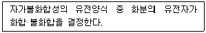
- 계통형 자가불화합성
- 인공형 자가불화합성
- 포자체형 자가불화합성
- 배우체형 자가불화합성
(정답률: 72%)
38. 다음 중 멘델의 유전법칙에 대한 설명으로 틀린 것은?
- 우성과 열성의 대립유전자가 함께 있을 때 우성형질이 나타난다.
- F2에서 우성과 열성형질이 일정한 비율로 나타난다.
- 유전자들이 섞여 있어도 순수성이 유지된다.
- 두 쌍의 대립형질이 서로 연관되어 유전분리한다.
(정답률: 55%)
39. 자식성 작물에서 신품종의 증식과정은?
- 원원종포 → 원종포 → 채종포
- 채종포 → 원원종포 → 원종포
- 원종포 → 원원종포 → 채종포
- 원원종포 → 채종포 → 원종포
(정답률: 84%)
40. 한 개의 유전자가 여러 가지 형질의 발현에 관여하는 현상을 무엇이라 하는가?
- 반응규격
- 다면발현
- 호메오스타시스
- 가변성
(정답률: 90%)
3과목: 재배원론
41. 다음 중 장일식물로만 나열된 것은?
- 도꼬마리, 코스모스
- 시금치, 아마
- 목화, 벼
- 나팔꽃, 들깨
(정답률: 69%)
42. 다음 중 다년생 방동사니과에 해당하는 것으로만 나열된 것은?
- 여뀌, 물달개비
- 올방개, 매자기
- 개비름, 맹아주
- 망초, 별꽃
(정답률: 70%)
43. 다음에서 설명하는 것은?
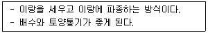
- 평휴볍
- 휴립구파법
- 성휴법
- 휴립휴파법
(정답률: 72%)
44. 다음 중 CO2 보상점이 가장 낮은 식물은?
- 벼
- 옥수수
- 보리
- 담배
(정답률: 70%)
45. 공예작물 중 유료작물로만 나열된 것은?
- 목화, 삼
- 모시풀, 아마
- 참깨, 유채
- 어저귀, 왕골
(정답률: 80%)
46. 다음에서 설명하는 것은?
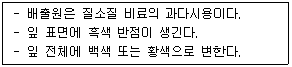
- 아황산가스
- 불화수소가스
- 암모니아가스
- 염소계 가스
(정답률: 69%)
47. 다음 중 작물의 기지 정도에서 휴작을 가장 적게 하는 것은?
- 당근
- 토란
- 참외
- 쑥갓
(정답률: 58%)
48. 고립상태일 때 광포화점(%)이 가장 낮은 것은?(단, 조사광량에 대한 비율임)
- 고구마
- 콩
- 사탕무
- 무
(정답률: 51%)
49. 다음 중 자연교잡률(%)이 가장 높은 것은?
- 벼
- 수수
- 보리
- 밀
(정답률: 55%)
50. 다음 중 3년생 가지에 결실하는 것으로만 나열된 것은?
- 감, 밤
- 포도, 감귤
- 사과, 배
- 호두, 살구
(정답률: 77%)
51. 엽채류의 안전저장 조건으로 가장 옳은 것은?
- 온도 : 0~4℃, 상대습도 : 90~95%
- 온도 : 5~7℃, 상대습도 : 80~90%
- 온도 : 0~4℃, 상대습도 : 70~80%
- 온도 : 5~7℃, 상대습도 : 70~80%
(정답률: 53%)
52. 다음 중 천연 옥신류에 해당하는 것은?
- GA2
- IAA
- CCC
- BA
(정답률: 80%)
53. 다음 중 작물별로 구분할 때 K의 흡수비율이 가장 높은 것은?
- 콩
- 고구마
- 옥수수
- 벼
(정답률: 74%)
54. 작물의 내열성에 대한 설명으로 틀린 것은?
- 늙은 잎은 내열성이 가장 작다.
- 내건성이 큰 것은 내열성도 크다.
- 세포 내의 결합수가 많고, 유리수가 적으면 내열성이 커진다.
- 당분함량이 증가하면 대체로 내열성은 증대한다.
(정답률: 69%)
55. 냉해대책으로 입지조건 개선에 대한 내용으로 틀린 것은?
- 방풍림을 제거하여 공기를 순환시킨다.
- 객토 등으로 누수답을 개량한다.
- 암거배수 등으로 습답을 개량한다.
- 지력을 배양하여 건실한 생육을 꾀한다.
(정답률: 74%)
56. 수광태새가 좋아지고 밀식적응성을 높이는 콩의 초형으로 틀린 것은?
- 키가 크고, 도복이 안되며, 가지를 적게 친다.
- 꼬투리가 원줄기에 많이 달리고, 밑에까지 착생한다.
- 잎이 크고 가늘다.
- 잎자루가 짧고 일어선다.
(정답률: 61%)
57. 다음 중 감온형에 해당하는 것은?
- 그루콩
- 올콩
- 그루조
- 가을메밀
(정답률: 78%)
58. 공기 속에 산소는 약 몇 %정도 존재하는가?
- 약 35%
- 약 32%
- 약 28%
- 약 21%
(정답률: 79%)
59. 다음 중 작물의 주요온도에서 '최고온도'가 가장 높은 것은?
- 밀
- 옥수수
- 호밀
- 보리
(정답률: 75%)
60. 작물의 기원지가 남아메리카 지역에 해당하는 것으로만 나열된 것은?
- 메밀, 파
- 배추, 감
- 조, 복숭아
- 감자, 담배
(정답률: 82%)
4과목: 식물보호학
61. 배추 무사마귀병균에 대한 설명으로 옳은 것은?
- 산성 토양에서 많이 발생한다.
- 주로 건조한 토양에서 발생한다.
- 전형적인 병징은 주로 꽃에서 발생한다.
- 병원균을 인공배양하여 감염여부를 알 수 있다.
(정답률: 69%)
62. 다음 설명에 해당하는 것은?
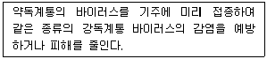
- 파지
- 교차보호
- 기주교대
- 효소결합
(정답률: 75%)
63. 다년생 논 잡초가 우점하는 군락형으로 천이가 일어나는 원인으로 가장 거리가 먼 것은?
- 손 제초 감소
- 잡초의 휴면성
- 재배시기 변동
- 잡초 방제 방법 변화
(정답률: 56%)
64. 잡초의 생육 특성에 대한 설명으로 옳지 않은 것은?
- 잡초는 생육의 유연성이 크다.
- 대부분의 문제 잡초들은 C4 식물이다.
- 일반적으로 잡초는 종자 크기가 작아서 발아가 빠르다.
- 일반적으로 잡초는 독립 생장은 늦지만 초기 생장은 빠른 편이다.
(정답률: 68%)
65. 완전변태를 하는 곤충으로만 올바르게 나열한 것은?
- 벌, 파리
- 매미 , 잠자리
- 메뚜기, 노린재
- 진딧물, 총채벌레
(정답률: 70%)
66. 생물적 잡초 방제 방법으로 옳지 않은 것은?
- 상호대립억제작용은 잡초 방제에 방해가 된다.
- 식물 병원균은 수생 잡초의 방제에 효과적이다.
- 잡초 방제에 이용되는 천적은 식해성 곤충일수록 좋다.
- 어패류를 이용할 경우 초종 선택성이 없어 방류제한성이 문제가 된다.
(정답률: 58%)
67. 10a당 3kg을 사용하는 약제를 가지고 5000m2에 사용하려면 필요 약량은?
- 1.5kg
- 2kg
- 15kg
- 20kg
(정답률: 75%)
68. 흰가루병균과 같이 살아있는 기주에 기생하여 기주의 대사산물을 섭취해서만 살아갈 수 있는 병원균은?
- 순사물기생균
- 반사물기생균
- 반활물기생균
- 순활물기생균
(정답률: 79%)
69. 밭에 발생하는 일년생 잡초는?
- 쑥, 망초
- 메꽃, 쇠비름
- 쇠뜨기, 까마중
- 명아주, 바랭이
(정답률: 56%)
70. 잡초에 대한 작물의 경합력을 높이는 방법으로 옳지 않은 것은?
- 윤작 실시
- 토양 pH 조절
- 재배 방법 변화
- 작물 품종 선택
(정답률: 67%)
71. 벼 도열병균의 주요 전염 방법으로 옳은 것은?
- 토양
- 잡초
- 바람
- 관개수
(정답률: 61%)
72. 파리목 성충의 형태적 특징으로 옳은 것은?
- 날개가 1쌍이다.
- 몸이 좌우로 납작하다.
- 씹는 입틀을 가지고 있다.
- 날개가 비늘가루로 덮여있다.
(정답률: 67%)
73. 1988년 부산 금정산에서 처음 발견되었고 소나무에 많은 피해를 주는 병의 매개충은?
- 솔나방
- 솔잎혹파리
- 솔수염하늘소
- 솔껍질깍지벌레
(정답률: 68%)
74. 매개충과 관련된 식물병을 짝지은 것으로 옳지 않은 것은?
- 끝동매미충 - 벼 오갈병
- 애멸구 - 벼 줄무늬잎마름병
- 말매미충 - 대추나무 빗자루병
- 복숭아혹진딧물 - 감자 잎말림병
(정답률: 59%)
75. 유기인계 농약이 아닌 것은?
- 포레이트 입제
- 페니트로티온 유제
- 클로르피리포스메틸 유제
- 감마사이할로트린 캡슐현탁제
(정답률: 60%)
76. 식물 병원체의 변이 기작이 아닌 것은?
- 이핵 현상
- 일액 현상
- 준유성생식
- 이수체 형성
(정답률: 69%)
77. 다음 설명에 해당하는 식물병은?
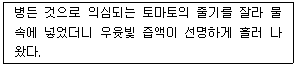
- 돌림병
- 오갈병
- 시들음병
- 풋마름병
(정답률: 68%)
78. 농약이 인체 내로 들어와 흡입중독 시 응급처치 방법으로 옳지 않은 것은?
- 옷을 벗겨 체온을 낮춘다.
- 편안한 자세로 안정시킨다.
- 공기가 신선한 곳으로 옮긴다.
- 호흡이 약하면 인공호흡을 한다.
(정답률: 68%)
79. 다음 설명에 해당하는 해충은?
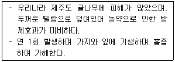
- 귤응애
- 귤굴나방
- 루비깍지벌레
- 담배거세니마나방
(정답률: 65%)
80. 직접 살포하는 농약 제제인 것은?
- 유제
- 입제
- 수용제
- 수화제
(정답률: 72%)
5과목: 종자관련법규
81. 종자관련법상 품종목록 등재의 유효기간에서 품종목록 등재의 유효기간 연장신청은 그 품종목록 등재의 유효기간이 끝나기 전 몇 년 이내에 신청하여야 하는가?
- 1년
- 2년
- 3년
- 4년
(정답률: 81%)
82. 종자관련법상 포장검사에서 국가보증이나 자체보증을 받은 종자를 생산하려는 자는 농림축산식품부장관 또는 종자관리사로부터 채종 단계별로 몇 회 이상 포장(圃場)검사를 받아야 하는가?
- 1회
- 2회
- 3회
- 4회
(정답률: 84%)
83. 보증서를 거짓으로 발급한 종자관리사는 얼마 이하의 벌금에 처하는가?
- 300만원
- 600만원
- 1천만원
- 3천만원
(정답률: 80%)
84. 종자검사요령상 순도분석 용어에서 “화방”의 용어를 설명한 것은?
- 주공(珠孔)부분의 조그마한 돌기
- 빽빽히 군집한 화서 또는 근대 속에서는 화서의 일부
- 외종피가 과피와 합쳐진 벼과 식물의 나줄과
- 단단히 내과피(endocarp)와 다육질의 외층을 가진 비열개성의 단립종자를 가진 과실
(정답률: 70%)
85. 종자관련법상 “종자의 보증 효력을 잃은 것”에 해당하지 않은 것은?
- 보증표시를 하지 아니하거나 보증표시를 위조 또는 변조하였을 때
- 보증의 유효기간이 지났을 때
- 거짓이나 그 밖의 부정한 방법으로 보증을 받았을 때
- 해당 종자를 종자관리사의 감독에 따라 분포장(分包裝)했을 때
(정답률: 85%)
86. 식물신품종관련법상 심판의 합의체에 대한 내용이다. ( )에 알맞은 내용은?
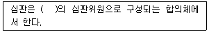
- 3명
- 5명
- 7명
- 9명
(정답률: 63%)
87. 식물신품종관련법상 품종보호권의 존속기간에서 품종보호권의 존속기간은 품종보호권이 설정등록된 날부터 몇 년으로 하는가? (단, 과수와 임목의 경우는 제외한다.)
- 15년
- 20년
- 25년
- 30년
(정답률: 81%)
88. ( )에 알맞은 내용은?
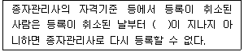
- 6개월
- 1년
- 2년
- 3년
(정답률: 63%)
89. 식물신품종관련법상 우선권의 주장에 대한 내용이다. ( )에 알맞은 내용은?
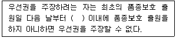
- 3개월
- 6개월
- 9개월
- 1년
(정답률: 62%)
90. 종자관련법상 종자업을 하려는 자는 종자관리사를 몇 명 이상 두어야 하는가? (단, 대통령령으로 정하는 작물의 종자를 생산·판매하려는 자의 경우는 제외한다.)
- 1명
- 2명
- 3명
- 4명
(정답률: 79%)
91. 콩 포장검사 시 특정병에 해당하는 것은?
- 모자이크병
- 세균성점무늬병
- 불마름병(엽소병)
- 자주무늬병(자반병)
(정답률: 60%)
92. 유통 종자 또는 묘의 품질표시를 하지 아니하거나 거짓으로 표시하여 종자 또는 묘를 판매하거나 보급한 자의 과태료는?
- 300만원 이하
- 600만원 이하
- 1천만원 이하
- 2천만원 이하
(정답률: 79%)
93. ( )에 알맞은 내용은?
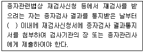
- 15일
- 18일
- 21일
- 30일
(정답률: 58%)
94. 종자검사요령에서 수분의 측정 시 저온항온건조기법을 사용하게 되는 종은?
- 오이
- 참외
- 녹두
- 피마자
(정답률: 67%)
95. 종자검사요령에서 시료추출 시 고추 제출시료의 최소중량은?
- 30g
- 50g
- 100g
- 150g
(정답률: 73%)
96. 식물신품종관련법상 품종보호를 받을 수 있는 권리의 승계에 대한 내용으로 틀린 것은?
- 동일인으로부터 승계한 동일한 품종보호를 받을 수 있는 권리에 대하여 같은 날에 둘 이상의 품종보호 출원이 있는 경우에는 품종보호 출원인 간에 협의하여 정한 자에게만 그 효력이 발생한다.
- 품종보호 출원 후에 품종보호를 받을 수 있는 권리의 승계는 상속이나 그 밖의 일반승계의 경우를 제외하고는 품종보호 출원인이 명의변경신고를 하지 아니하면 그 효력이 발생하지 아니한다.
- 품종보호 출원 전에 해당 품종에 대하여 품종보호를 받을 수 있는 권리를 승계한 자는 그 품종보호의 출원을 하지 아니하는 경우에도 제3자에게 대항할 수 있다.
- 동일인으로부터 승계한 동일한 품종보호를 받을 수 있는 권리의 승계에 관하여 같은 날에 둘 이상의 신고가 있을 때에는 신고한 자 간에 협의하여 정한 자에게만 그 효력이 발생한다.
(정답률: 73%)
97. ( )에 알맞은 내용은?
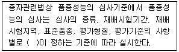
- 국립종자원장
- 농촌진흥청장
- 농업기술센터장
- 농업기술원장
(정답률: 63%)
98. ( )에 알맞은 내용은?
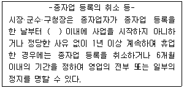
- 6개월
- 1년
- 2년
- 3년
(정답률: 70%)
99. 종자관리요강상 포장검사 및 종자검사의 검사기준에 대한 내용이다. ( )에 알맞은 내용은?
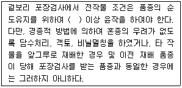
- 6개월
- 9개월
- 1년
- 2년
(정답률: 36%)
100. 종자관려요강상 수입적응성시험의 대상작물 및 실시기관에서 “인삼”의 실시기관은?
- 농업기술실용화재단
- 한국종자협회
- 한국생약협회
- 농업협동조합중앙회
(정답률: 79%)